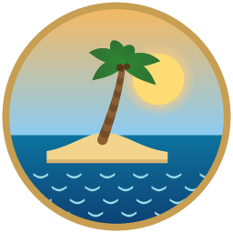

Naufragaste en un archipiélago desconocido. Construye tu barco, conoce a la tribu Shandara, busca las Frutas del Abismo y sigue la ruta de La Última Pieza. Solo o con tus amigos en LAN.
Windows 10/11 · La app trae un lanzador para tener varias versiones instaladas y elegir cuál jugar.
Instala la app para Windows. Incluye la versión más reciente del juego y un lanzador para elegir con qué versión jugar.
Cargando…
Para jugar una versión anterior, abre la app instalada: en el lanzador elige la versión y pulsa Descargar (puedes tener varias a la vez). El navegador siempre juega la última.
Cargando…